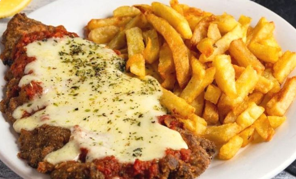

Milanesa
Milanesa

Milanesa napolitana is a variation on the breaded fried steak called milanesa that is popular in Argentina and Uruguay. Milanesa a la Napolitana does not originate from Milan or Naples; it's thought to have been invented in the 1940s at a Buenos Aires restaurant called “Nápoli”.
Milanesa napolitana is similar to veal parmesan, but with South American touches. After the steak is breaded and fried, it's topped with a slice of ham, tomato sauce, and melted mozzarella cheese, and served with french fries. Leftovers make great sandwiches, especially when paired with a soft but crusty roll.
Ingredients
- Four thinly sliced skillet steaks
- Eggs
- Oregano
- Kosher salt
- Freshly ground black pepper
- Parmesan cheese
- Garlic, finely minced
- Olive oil
- Tomato sauce
- Deli ham
- Mozzarella cheese
- Italian seasoning
Steps
- Place eggs in a shallow bowl or pan, and whisk together with oregano, salt, and pepper
- Stir Parmesan cheese and garlic into bread crumbs and place in another shallow pan
- Dip steaks first in egg mixture, then in bread crumbs, coating well with crumbs
- Heat oil in a heavy skillet, and cook steaks for several minutes on each side, until golden brown and crispy. Drain steaks on paper towels.
- Place steaks on a baking sheet. Turn on broiler
- Top each steak with a slice of ham, 2 to 3 tablespoons tomato sauce, and 1/4 cup grated mozzarella cheese. Sprinkle Italian seasoning over cheese, and place steaks under broiler until cheese melts.
- Serve warm, with fries. Enjoy!